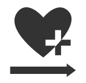
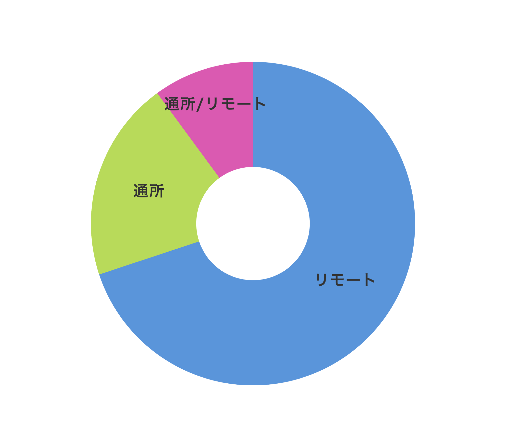
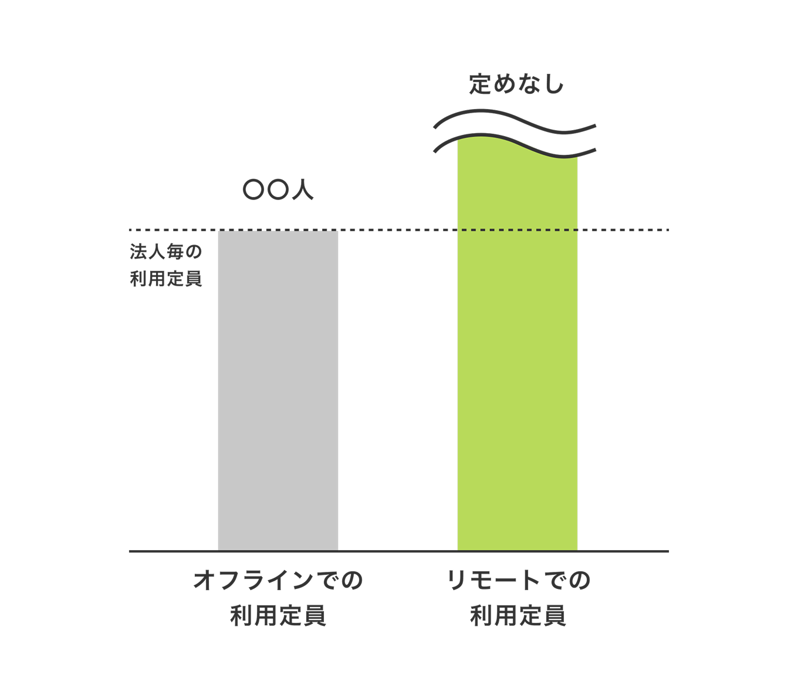

リモート導入支援 人材採用支援
福祉専門のリモート導入支援と人材採用支援で、未来の法人運営を実現します。
リモート支援の導入
どこからでも
コミュニケーションが
とれる
オフライン（従来の支援）での支援では、支援対象者さんに通所をしてもらう事で支援・コミュニケーションをとっていましたが、リモート支援では支援対象者さんが自宅に居ても、web上でも支援・コミュニケーションをとることが可能になります。
- 作業の指示や、定期的なモニタリングをオンライン上で完結
- 支援に関わる連絡以外にも、趣味の話や最近の出来事などの日常会話も可能
- 支援に関わる連絡以外にも、趣味の話や最近の出来事などの日常会話も可能
リモート支援
が必要な現状
諸事情により外出が困難だけど、社会復帰をしたいと願う方が多々いらっしゃいます。そのため、せっかく支援を求めても、移動の負担から途中で断念してしまったり、そもそもサービス利用に踏み切れないケースが少なくありません。支援を提供する私たちにとっても、移動時間やコストが大きな課題となり、対応できる人数に限りがあるのが現状です。「支援を届けたい」という思いと、「支援を受けたい」という願いをつなぐために、場所に縛られないリモートでの支援が、今、強く求められています。
弊社サービスのメリット
-

01
質の高い支援を継続できる
-
02
職員の負担を軽減
-
03
リモート支援のノウハウの提供
-
04
採用活動の効率が格段にアップする
-
05
専門ノウハウでミスマッチをなくす
-
06
専門職の人材を確保できる
効果・実績
-

支援対象者のリモート率が約70%
Plusらぼでは、支援対象者の約70%がリモート支援を受けており、時間や場所に縛られない支援を実現しています。当社のサービスは、システム導入だけでなく運用・定着までサポートし、支援対象者と法人双方にとって最善の支援を目指します。
-

利用定員に制限がない
リモート支援に利用制限がないのは、従来の通所型サービスに適用される「利用定員」に基づく人員配置基準の適用外となる場合が多いためです。対して、リモート支援は場所や形態の柔軟性から、その枠にとらわれずに実施できます。これにより、定員がいっぱいの事業所でも、リモート支援を導入することで、支援対象者数の上限を気にせず支援を提供し、支援の幅を広げられるというメリットがあります。
-
就職先にリモートという選択肢が増えた
支援対象者にリモートで働くという体験を提供することで就職にリモートワークという選択肢が生まれます。また、採用じにリモートワーク経験のアピールができ、有利にはたらきます。
-
エンジニアやデザイナーの採用実績があります
社会福祉法人のDX（デジタルトランスフォーメーション）推進に不可欠なITスキルを持つ人材の確保（エンジニア・デザイナーなど）を支援し、専門職人材と共に法人のサービスを進化させ、未来の福祉を創造します。
利用者の声・支援員の声
利用者：1年
病気の治療のため、従来の障害福祉サービスを継続できず在宅状態が続いていました。この状況で、Plusらぼの在宅訓練を開始。自宅に居ながら指導を受けられる点は、健康維持との両立が不可欠な利用者にとって、大きなニーズを満たしました。また、遠隔支援でありながら、物理的な距離を超えて「一緒に考えてもらっている」という安心感が得られ、外出が困難な状況下での支援継続に必須の条件となりました。このリモート支援の継続で、就労を目指しています。
支援員：4年
私たちの強みは、強い対人不安や難病などで外出が難しい方々への支援実績です。これまでの訪問・同行支援では「その場限り」の限界がありましたが、現在は場所や時間の制約を受けないリモート支援を導入しました。リモート支援は、利用者様にとって「離れていても近くにいるためのツール」であり、対面での通所だけでなく、オンラインでの安心できる支援という選択肢を提供することで、多様な生き方・働き方をサポートします。
利用者：現在就職
職場勤務では、対人的な不安から体調を崩し、退職を繰り返していました。そのため、環境をある程度コントロールできる在宅就業であれば、仕事を続けられるのではないかと考え、まず在宅訓練を開始しました。在宅訓練を通じて、精神的負担が大幅に軽減されることを実感。「これなら仕事を続けられるかもしれない」と、就業への見通しが立つようになりました。現在、在宅で就業していますが、職場勤務時よりも対人不安が軽くなっているため、継続して働ける可能性を感じています。
支援員：4年
リモート支援の導入後、職員の働き方や利用者への対応に変化が見られました。まず、口頭や文章に関わらず、分かりやすい言語表現を使う意識が向上しました。また、他職員の応答が見られるようになったため、「こないだチャットで〇〇とおっしゃってましたよね」といったように、自分の担当外の利用者とも会話するきっかけが作りやすくなりました。チャットを利用することで同時に複数人の利用者に対応できるようになり、効率が向上しています。また、遠方に住んでいて即時に訪問が難しい利用者でも、ビデオ通話で面談ができるようになり、リアルタイムでの相談対応が可能となりました。
エンジニア：20年
プログラマーは、「成果物」で評価されやすいため、リモートワークと相性が抜群です。私自身、フリーランスとしてその合理性を実感しています。さらに、コミュニケーションに苦手意識がある方にとって、リモートワークが大きなメリットをもたらすことを発見しました。チャットでのやり取りは、自分のペースで質問でき、焦らずに「何をどう伝えるか」を考える時間が生まれます。この「文字にするプロセス」を繰り返すことで、自然と的確なコミュニケーション能力が身につく、実践的な成長の場となっています。
プランのご紹介
人材採用プラン
-
ライトプラン
- ・採用戦略の策定
- ・求人媒体の運用と改善
- ・スポット的に採用を支援
-
スタンダードプラン
- ・採用戦略の策定
- ・求人媒体の運用と改善
- ・求人票の作成
- ・採用LPの制作
- ・3ヶ月間〜6ヶ月間の継続採用サポート
おすすめプラン
-
プレミアムプラン
- ・採用戦略の策定
- ・求人媒体の運用と改善
- ・採用サイトの制作
- ・採用動画の制作
- ・6ヶ月間以上の継続採用サポート
人材採用を積極的にしたい方に
オススメ
POINT
採用戦略の策定から求人媒体への落とし込み、運用までを一気通貫でサポートします。スタンダードプランからは求人票・LPを作成し、各種媒体でご活用いただけます。さらにプレミアムプランではサイトや動画制作までご対応可能です。ご希望に応じて広告運用代行も承ります。
リモート導入プラン
-
コミュニケーションプラン
（基本プラン）- ・モバイルで使えるチャットツールの導入
- ・クラウドドライブの整備
リモート化するのに欠かせないプランです。
-
コミュニケーションプラン
＋
リモート化パック- 現状の支援対象者さんの仕事をリモートで実現する方法の考案・体制整備。
設備投資が必要ないパックです。但し、リモートワーク化ができない作業がある場合があります。
-
コミュニケーションプラン
＋
ITワークパック- 支援対象者さんの仕事としてよりリモートに適したITワーク案件取得および体制構築を支援します。
PC等の初期投資が必要な場合があります。リモート経験があると、利用者さんの就職に有利になります。
「新しい支援体制の構築」と「人材採用」を実現する
7つのステップ
-
01
ヒアリング
現状の採用状況と課題、お悩みなどをヒアリングさせていただきます。
-
02
採用戦略のご提案＆プランのご選択
ヒアリング内容を元に、採用戦略をご提案させていただいた上で、最適なプランをお選びいただきます。 またプランの範囲を超えてのご要望がある場合は別途お見積りいたします。
-
03
ご契約
内容をご確認いただき、ご納得いただきましたら契約を締結させていただきます。
-
04
着手金のお支払い
着手金のお支払い 着手金としてご契約金額の50％をお支払いいただきます。 ご入金後、すぐに準備を開始いたします。
-
05
制作の準備
求人情報の整理や社員の方のインタビュー、写真など制作に必要な素材を集めます。 またプランに採用動画が入っている場合は、撮影日のスケジュール調整などをおこないます。
-
06
納品＆残金のご精算
納品が完了いたしましたら、残りの50％をお支払いいただきます。
-
07
サポート
継続的に欲しい人材を獲得できるよう、求人票の改善やデータ分析、indeed広告など採用活動の運用と改善をサポートいたします。 ※サポートの期間や内容はご選択いただきたプランによります。
よくある質問
単にツールを提供するだけでなく、オンラインでも信頼関係を築くためのノウハウもご提供しています。例えば、定期的なオンラインミーティングを支援したり、チャットツールを活用した気軽な情報共有の方法をご提案したりすることで、対面での関わりを補完し、チームの一体感を高めるお手伝いをします。
私たちがご提案するプラットフォームは、フォルダひとつ一つに閲覧制限などの制約を設けられますので、ファイル管理についてもサポートいたします。
変化には不安がつきものです。既存の職員の方々への丁寧な説明会や研修をサポートすることで、リモートワークへの理解を深めていただきます。
スマホを利用したプランもご用意してます。また、PCを使用したサービスをお考えの場合、補助金を活用してPCを購入出来る場合がございます。※地域による
支援対象者の方のニーズに合わせた業務内容を検討したうえで、受注のコツをお伝えすることが可能です。
内容は通所時と相違はありません。リモートツールを用いた効率化をご提案可能です。
各市町村によって違いがございますので、市町村にお問い合わせください。
福祉業界の課題